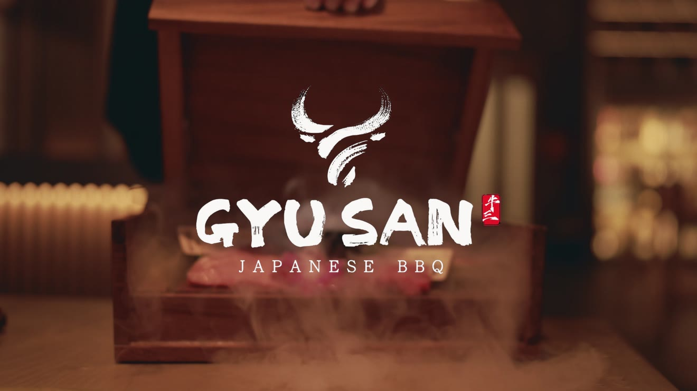

Gyu San / brand content / 16:9
Unreleased · portfolio previewExplore Gyu San 02 / Digital campaigns & creative productionDigital content
Digital content
& direction.
I make promotional and commercial video for restaurants, independent brands, and live events. The edit depends on where people will see it and what it needs to say. A food commercial needs a different pace from a fifteen-second event invite.
Explore campaigns ↓
GYU SAN / COMMERCIAL CONTENT / UNRELEASEDSelected campaigns / 06 projects · 08 edits
Showing all selected content.
01 / Commercial content
Gyu San
An unreleased Gyu San commercial focused on the wagyu, the tableside service, and the atmosphere of the restaurant.
02 / Digital event campaigns
Event promotions.
Selected work for events in Baltimore and Washington, DC. Registration figures come from the event listings.
Harbor East Run Club × Good Company
The 5K Social
A quick, movement-led promo for a group run and social morning organized by Harbor East Run Club and Good Company.
Good Company × The DC Pop Up
No Aesthetic Block Party
A DC block party bringing together local art, small businesses, food, vendors, and music. The edit puts the people and the event itself first.
Halo Cares
Between Seasons
A Halo Cares event centered on fashion and music. The promo focuses on the people, the clothes, and the atmosphere.
Good Company / Washington, DC
Last Chance
A daytime event for young DC creatives to meet people, make friends, find a date, or simply have a good time.
Llama Bar × Good Company + partners
Late Breakfast
Three cuts for the same event: an early teaser, the main promotion, and a post-event recap. Made for Llama Bar, Good Company, and their collaborators.